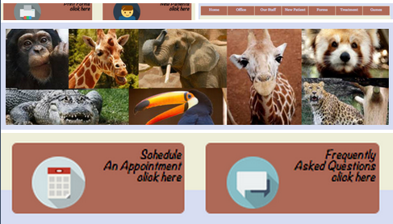

Greenville Pediatric Dentistry Website
This is my first website project! After about seven weeks of learning each step to building a website, this is almost the final step! There are still some edits and additional pages I would like to add to this site later.
This project was a website redesign. Each student was assigned a dentist website. Mine was
Check out the original coded Style Tiles for this project here: